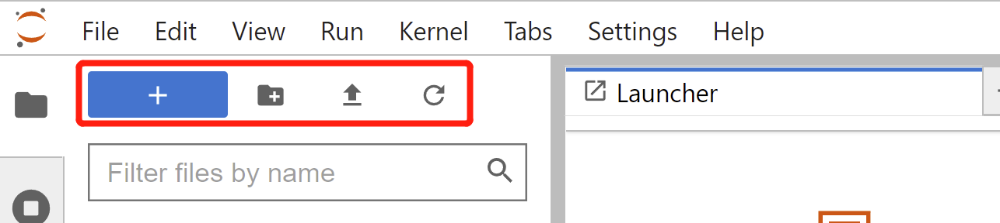

Jupyter notebook/Lab 简述⚓︎
在数据科学，机器学习，深度学习中，我们希望即时进行图像的可视化和函数的计算，基于这种需求，人们开发出了基于网页的用于交互计算的应用程序Jupyter Notebook。在我们的教程代码也是基于Jupyter notebook。除此之外，它们可被应用于全过程计算：开发、文档编写、运行代码和展示结果。在Jupyter Notebook中编写的文档保存为.ipynb的JSON格式文件，文档可以导出为HTML、LaTeX、markdown、PDF等格式。Jupyter Notebook的主要特点有：
-
编程时具有语法高亮、缩进、tab补全的功能。
-
可直接通过浏览器运行代码，同时在代码块下方展示运行结果。
-
以富媒体格式展示计算结果。富媒体格式包括：HTML，LaTeX，PNG，SVG等。
-
对代码编写说明文档或语句时，支持Markdown语法。
-
支持使用LaTeX编写数学性说明。
除此之外，好用的Jupyter Notebook还有个“双胞胎”——Jupyter Lab。Jupyter Lab是基于Web的集成开发环境，可以把它当作进化版的Jupyter Notebook。使用Jupyter Lab可以同时在一个浏览器页面打开编辑多个Notebook、Ipython console和terminal终端，甚至可以使用Jupyter Lab连接Google Drive等服务。由于Jupyter Lab拥有模块化结构，提供更多类似IDE的体验，已经有越来越多的人从使用Jupyter Notebook转向使用Jupyter Lab。
[* ]通过本章学习，你将收获：
- 安装和配置Jupyter Notebook和Jupyter Lab的方法
- Jupyter Notebook的基本操作和快捷键
- 使用Jupyter Notebook编写代码的方式
- 了解Jupyter Notebook的Bash命令和魔术命令
- 为Jupyter Notebook安装拓展插件的方法
1 Jupyter Notebook/Lab安装⚓︎
-
安装Jupyter Notebook：激活虚拟环境后，我们只需要在终端输入指令
conda install jupyter notebook # pip install jupyter notebook -
注：如果pip版本过低，还需提前运行更新pip的指令
pip install --upgrade pip
- 安装Jupyter Lab：激活环境后，我们同样也只需要在终端输入指令
conda install -c conda-forge jupyterlab
# pip install jupyterlab
- 在终端输入指令打开Jupyter Notebook
jupyter notebook # 打开Jupyter Notebook
jupyter lab # 打开Jupyter Lab
- 如果浏览器没有自动打开Jupyter Notebook或者Jupyter Lab，复制端口信息粘贴至浏览器打开

- 如果想要自定义端口，在终端输入如下指令修改
jupyter notebook --port <port_number>
- 如果想启动服务器但不打开浏览器，可以在终端输入
jupyter notebook --no-browser
2 Jupyter Notebook/Lab配置⚓︎
2.1 设置文件存放位置⚓︎
在使用Jupyter Notebook/Jupyter Lab时，如果我们想要更改默认文件存放路径，该怎么办？
-
Jupyter Notebook
-
我们首先需要查看配置文件，只需要在终端输入
jupyter notebook --generate-config
- 我们记住出现配置文件的路径，复制到文件夹中打开（终端这里可以写N）

- 在文件夹中双击打开配置文件

-
打开Python文件后，用
Ctrl+F快捷键查找，输入关键词，找到# c.NotebookApp.notebook_dir = '' -
去掉注释，并填充路径
c.NotebookApp.notebook_dir = 'D:\\Adatascience'

- 此时我们在终端中输入
jupyter notebook，打开页面后发现文件默认路径已经被更改。但是点击菜单栏中的应用快捷方式打开Jupyter Notebook，打开页面发现文件位置仍然是默认路径

- 如果我们想要更改应用快捷方式Jupyter Notebook的文件位置，此时需要右键选中快捷方式，打开文件所在位置。再右键点击快捷方式，查看属性，再点击快捷方式


- 我们只需要在“目标”中删除红框标记部分，点击确定

-
此时再打开菜单栏中Jupyter Notebook的快捷方式，发现页面文件路径已经变为之前自主设置的路径啦！
-
Jupyter Lab的修改操作和Jupyter Notebook流程相似，但是在细节上有些不同
-
同样我们还是首先需要查看配置文件，在终端输入
jupyter lab --generate-config
-
找到配置文件所在的文件夹，打开配置文件
-
修改配置文件时，用
Ctrl+F快捷键查找，输入关键词，找到# c.ServerApp.notebook_dir，去掉注释。改为c.ServerApp.notebook_dir = 'D:\\Adatascience（这里填自己想改的文件路径）' -
之后的步骤和Jupyter Notebook修改配置文件的第七至第十步相同
2.2 使用虚拟环境⚓︎
需要注意的是，Anaconda安装的虚拟环境和Jupyter Notebook运行需要的Kernel并不互通。那么我们该如何解决这个问题，并且如果我们想要切换内核（Change Kernel），该如何操作呢？
- 将在Anaconda中创建的虚拟环境添加
ipykernel
# 如果还没创建环境，在创建时要加上ipykernel
conda create -n env_name python=3.8 ipykernel
# 如果已经创建环境，在环境中安装ipykernel
pip install ipykernel
- 将虚拟环境写进Jupyter
python -m ipykernel install --user --name env_name --display-name "env_name"
- 在
Kernel中更换添加的虚拟环境即可

3 Jupyter Notebook\Lab基本操作⚓︎
3.1 基本使用⚓︎
3.1.1 Jupyter Notebook⚓︎
- 创建文件：点击右上角New，选择Notebook；创建文件夹：点击右上角New，选择Folder

- 删除文件：点击文件前的方框，再点击删除图标

- 重命名文件：当文件在运行时（即文件前图标为绿色），需要先点击“Shutdown”（关闭终端），再点击“Rename”

- 重命名文件夹：点击文件夹前的方框，再点击“Rename”
- 复制（Duplicate）、移动（Move）、下载（Download）、查看（View）等操作，同样可以点击文件前的方框，再点上方的图标进行操作
3.1.2 Jupyter Lab⚓︎
- 红框内按钮从左到右分别是新建文件、新建文件夹、上传文件和刷新

-
上传多个文件的方法：
-
将文件打包成一个zip压缩包
- 上传该压缩包
- 解压文件
!unzip (压缩包所在路径) -d (解压路径)，例如：!unzip coco.zip -d data/coco - 删除该压缩包
3.2 常用快捷键⚓︎
- 入门操作
# 增加，减少，剪切，保存，删除等
# a, b, x, s, dd
# 合并，执行本单元代码，并跳转到下一单元，执行本单元代码，留在本单元
# Shift+M Shift+Enter Ctrl+Enter
# 显示行数，切换markdown/code
# l, m/y
-
Jupyter Notebook中按下Enter进入编辑模式，按下Esc进入命令模式
-
编辑模式（绿色）

- 命令模式（蓝色）

- 在命令模式下，点击h，会弹出快捷键窗口

-
Jupyter Lab同样有两种模式。按下Enter进入编辑模式，按下Esc进入命令模式
-
编辑模式（有框线无光标）
- 命令模式（无框线无光标）
-
快捷键操作与Jupyter Notebook基本相同，可参考上一部分
-
快捷键汇总
命令模式（按Esc）
- Enter : 转入编辑模式
- Shift-Enter : 运行本单元，选中下个单元
- Ctrl-Enter : 运行本单元
- Alt-Enter : 运行本单元，在其下插入新单元
- Y : 单元转入代码状态
- M :单元转入markdown状态
- R : 单元转入raw状态
- 1 : 设定 1 级标题
- 2 : 设定 2 级标题
- 3 : 设定 3 级标题
- 4 : 设定 4 级标题
- 5 : 设定 5 级标题
- 6 : 设定 6 级标题
- Up : 选中上方单元
- K : 选中上方单元
- Down : 选中下方单元
- J : 选中下方单元
- Shift-K : 扩大选中上方单元
- Shift-J : 扩大选中下方单元
- A : 在上方插入新单元
- B : 在下方插入新单元
- X : 剪切选中的单元
- C : 复制选中的单元
- Shift-V : 粘贴到上方单元
- V : 粘贴到下方单元
- Z : 恢复删除的最后一个单元
- D,D : 删除选中的单元
- Shift-M : 合并选中的单元
- Ctrl-S : 文件存盘
- S : 文件存盘
- L : 转换行号
- O : 转换输出
- Shift-O : 转换输出滚动
- Esc : 关闭页面
- Q : 关闭页面
- H : 显示快捷键帮助
- I,I : 中断Notebook内核
- 0,0 : 重启Notebook内核
- Shift : 忽略
- Shift-Space : 向上滚动
- Space : 向下滚动
编辑模式（按Enter）
- Tab : 代码补全或缩进
- Shift-Tab : 提示
- Ctrl-] : 缩进
- Ctrl-[ : 解除缩进
- Ctrl-A : 全选
- Ctrl-Z : 复原
- Ctrl-Shift-Z : 再做
- Ctrl-Y : 再做
- Ctrl-Home : 跳到单元开头
- Ctrl-Up : 跳到单元开头
- Ctrl-End : 跳到单元末尾
- Ctrl-Down : 跳到单元末尾
- Ctrl-Left : 跳到左边一个字首
- Ctrl-Right : 跳到右边一个字首
- Ctrl-Backspace : 删除前面一个字
- Ctrl-Delete : 删除后面一个字
- Esc : 进入命令模式
- Ctrl-M : 进入命令模式
- Shift-Enter : 运行本单元，选中下一单元
- Ctrl-Enter : 运行本单元
- Alt-Enter : 运行本单元，在下面插入一单元
- Ctrl-Shift-- : 分割单元
- Ctrl-Shift-Subtract : 分割单元
- Ctrl-S : 文件存盘
- Shift : 忽略
- Up : 光标上移或转入上一单元
- Down :光标下移或转入下一单元
3.3 安装插件⚓︎
-
Jupyter Notebook安装插件的方法
-
在Anaconda Powershell Prompt中输入
pip install jupyter_contrib_nbextensions
- 再次输入以下指令，将插件添加到工具栏
jupyter contrib nbextension install
- 打开Jupyter Notebook，点击Nbextensions，取消勾选
disable configuration for nbextensions without explicit compatibility，此时可以添加自己喜欢的插件啦！

-
推荐以下两个基础插件
-
Execute Time：可以显示执行一个Cell要花费多少时间
-
Hinterland：提供代码补全功能
-
Jupyter Lab安装插件的方法
-
Jupyter Lab安装插件点击左侧的第四个标志，点击“Enable”后就可以在搜索栏中搜索想要的插件

- 例如搜索
jupyterlab-execute-time后，在Search Results中查看结果，点击Install便可安装插件

- 还可以在Anaconda Powershell Prompt中使用指令来安装插件
jupyter labextension install jupyterlab-execute-time # 安装jupyterlab-execute-time
4 进阶操作⚓︎
除了以上操作，Jupyter Notebook还有许多丰富的内容等待大家探索。如Bash命令、魔术命令等。我们为大家提供了一份在Notebook中编写的进阶操作，快来试试看吧~
点击查看进阶教程
5 参考资料⚓︎
【1】Jupyter Notebook介绍、安装及使用教程 - 知乎 (zhihu.com)
创建日期: November 30, 2023